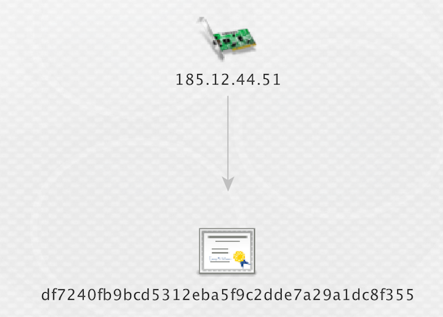

Hunting Threat Actors with SSL Certificates
Using open source data to hunt threat actors and defend networks
Mark Parsons / @markpars0ns
Who am I
Mark Parsons
- Incident responder and Network defender
- Small time python programmer
- Occasional Threat Analyst
Who am I not
Animator - Archer
One Direction Fan Fiction???
Tradtional methods of hunting
- Whois tracking
- Name server monitoring
- Passive DNS
- Malware/Implant tracking (VT, Malwr, TotalHash etc)
What else could we do that provides pivotable/trackable data
Hint: Its all about secure sockets or transport layer security
That's right SSL/TLS certificates!!!
Quick Caveat
Code signing certificate != SSL/TLS certificate
So ssl certificates you say?
Where do you start?
First you need some data
Scans performed by Rapid7
- Raw data going back to 10/30/2013
- Easily consumable
- Updated weekly
- Incremental in nature
- certs.gz - Only new sha1's and base64 raw cert seen that week
- hosts.gz - SHA1 and host for all hosts seen
- No public search interface
- Is weekly frequent enough?
Maintained by the University of Michigan and University of Illinois Champaign Urbana
- Easy to use search interface
- API Access
- Frequent Updates
- All or nothing in nature
- If there is a delta between scans
old scan data is not in main search interface
- Old scan data is available in json format
- Should be the first place any analyst goes when performing any infrastructure hunting
- Merge tradtional hunting with new methods
- Aggregates multiple passive DNS sources
- Provides WHOIS data
- Provides references to OpenSource reporting
- Also has SSL certificates
- So much more we are only touching the surface
If you aren't you using it
You really should try it out
You won't regret it
Disclamer: PassiveTotal provided me researcher access for data required for this presentation
Network Hygeine
Most of these you will have to do with your own sonar scan data or censys.io data
Look at your netblocks
- Use your ASN for a censys.io search
- Use your ASN or subnets if sonar data in elasticsearch
What to look for
- Your security appliances
- Remote access managment
- HP integrated Lights Out
- Dell Remote Access Card
- Websites or services you didn't know about
Look outside your netblocks
- Look for certs for your org not inside your netblocks
- Look for certs that have email addresses from your org
- Look for certs who have your org as a Subject Alt Name
Let's do some SSL hunting/pivoting
CVE-2014-1761
Remote Code Execution - Word RTF Memory Corruption Vulnerability
Awesome technet article
Yara Sigs!
SSL SHA1 Hash
Command and Control IP
Potential Command and Control Domain
Let's pivot on the IP and SSL SHA1
IP: 185.12.44.51
SHA1: df7240fb9bcd5312eba5f9c2dde7a29a1dc8f355

Let's do some traditional pivots
Passive DNS for times when the SSL certs were active
Whois on any relavant domains found
Success!!!!
Go from one SSL Cert, one IP, and one Domain
Get 6 IPs and Three Domains using same registration info